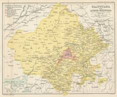
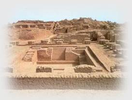
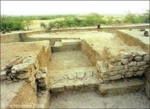
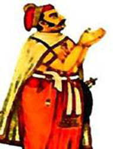
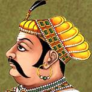
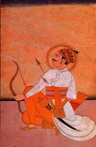
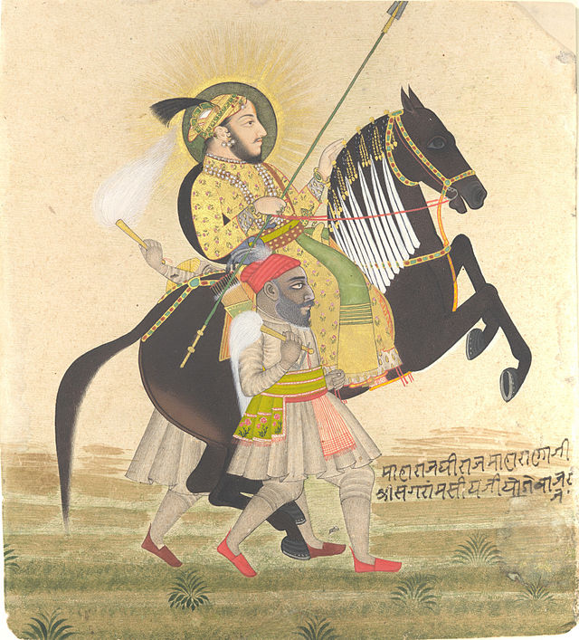
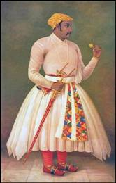

इतिहास
History and Geography of Rajasthan
The history of Rajasthan is about 5000 years old and the mythological origin of this gigantic land is related to the famous myth of Ram, the seventh incarnation of Lord Vishnu. In the ancient period, Rajasthan was a part of different dynasties including the Mauryan Empire. The first batch of Aryans who came to India settled in the region of "Dundhmer" and the first inhabitants of this area were the "Bheels" and the "Meenas". The earliest Rajput dynasty that emerged around 700 AD was the "Gurjars" and "Partiharas" and since then Rajasthan was known as Rajputana. Soon, the Rajput clan gained supremacy and the Rajputs were divided into 36 royal clans and 21 dynasties. The armed conflicts and the struggle for supremacy among the "Parmars", "Chalukyas", and "Chauhans" resulted in a lot of bloodshed. In the medieval era, the major regions of the state such as Nagaur, Ajmer and Ranthambhore became a part of the Mughal Empire, which was headed by Akbar. The most famous Rajput warriors of this era were Rana Uday Singh, his son MahaRana Pratap, Bhappa Rawal, Rana Kumbha and Prithviraj Chauhan. With the end of the Mughal regime in 1707, the Marathas gained supremacy and captured Ajmer in 1775. The Maratha ascendancy ended in the late 17th century with the arrival of Britishers. The present state of Rajasthan was formed in the year 1956. Geographically Rajasthan is located in the northwest India. The state has an area of 342,239 square kilometers. The state has rhomboid shape with length of 869 km. from west to east and 826 km. from north to south. Rajasthan shares its border with Pakistan, while Punjab, Haryana, Uttar Pradesh and Madhya Pradesh bound Rajasthan in north and east, and Gujarat in south-west.

Civilizations of Rajasthan
Rajasthan's civilisation is still preserved in Kalibangan, a town on the banks of the Ghaggar River of Hanumangarh district, Bikaner. Thar Desert has existence of Indus Valley Civillization and the remnants of the pre-Harappan and Harappan settlements.Realm of Kalibangan has many archaeological evidences which show that Rajasthan had once been an important centre of the ceramic industry.The paintings on the ancient pottery bear close resemblance to the Harappan designs. Contemporary pottery of Rajasthan has a distinct influence of the Indus Valley ceramic industry and related handicrafts. Indus Valley Civillization flourished on the banks of Saraswatiriver.

Transformation of this land took place after the mighty river changed its course and finally dried up due to the immensity of the encroaching desert. The land silently slipped into Thar desertwith whole civillisation buried in it.

Rulers of Rajasthan
Bapparawal
Bappa Rawal, born in 713 AD to Prince Kalbhoj, was the 8th ruler of the Guhilot dynasty. He founded the state of Mewar. The king was famous for his strong pride in his "Dharma", culture, and courage for defeating Arabian invaders. He started as a ruler of a small principality in Nagahrad (Nagda), and extended his rulership up to Chittor.In the 8th century Arab Muslims started attacking India. Bappa united the smaller states of Ajmer and Jaisalmer to stop the attacks. Bappa Rawal fought and defeated the Arabs in the country.

Rana Kumbha
Rana Kumbha was the ruler of Mewar, (a state in western India), between 1433 and 1468 AD. Rana Kumbha belonged to Sisodia clan. Kumbha was son of Rana Mokal. Rana Kumbha was famous for his bravery. Rana Kumbha decided to construct of an imposing, 37 meter high, 9 stories Victory Tower at Chittor. This famous tower was named as "Vijay Stambha" andwas completed in the year 1458.

Prithivi Raj Chauhan
Prithvi Raj Chauhan was born in the year 1149. Prithviraj Chauhan was a king of the Rajput dynasty, who ruled a kingdom in northern India during the later half of the 12th century.Prithviraj Chauhan was the second last Hindu king to sit upon the throne of Delhi. He succeeded to the throne in 1169 CE at the age of 20, and ruled from the twin capitals of Ajmer and Delhi. Chauhan defeated the Muslim ruler Shahabuddin Muhammad Ghori in the First Battle but set him free as a gesture of mercy. In second attack by Ghori, Chauhan was defeated and captured. Ghori took Chauhan to Ghazni and killed him ending an era of sheer bravery and courage.

Rana Sanga
Rana Sanga was born in the year 1484. Rana Sanga is also known as MaharanaSangramSingh . He was the Rajput ruler of Mewar. He ruled between 1509 and 1527. He brought Mewar to the peak of its prosperity and prominence, establishing it as the premier Rajput state. Sanga regularly attacked Afghans under Lodi at Khatoli (Gwalior) in 1517-18.

Maharana Pratap
Maharana Pratap (9 May 1540 – 29 January 1597) was the ruler of Mewar, a region in north-western India. Pratap was son of Maharani Jayantabai and King Udai Singh II founder of Udaipur. Maharana Pratap belonged to the Sisodia clan of Rajputs. Maharana Pratap Singh is widely regarded as a fearless warrior and ingenious strategist, who successfully fought the Mughals and safeguarded his people until his death. He is hailed as an inspirational figure for exemplifying gallantry and resourcefulness. Udaipur remained the capital of Mewar after fall of Chittor until its accession in independent India.

Amar singh Rathore
Another Rajput brave king was Amar Singh Rathore (11 December 1613 - 25 July 1644), who was famous as a Rajput nobleman affiliated with the royal house of Marwar, and a courtier of the Mughal emperor Shah Jahan in seventeenth-century India. When he was disinherited by his family, he entered the Mughals' service. His legendary bravery resulted in his elevation to a high rank in the imperial nobility and he was appointed as the"Subedar" of Nagaur. He served Mughals there at Agra for a short period after being denied his right of inheritance at Nagaur in Rajasthan. He was the famous fighter who jumped from Agra Fort with his horse.

Rajasthan Literature
Rajasthani literature is mostly heroic mentioning of the great kings and fighters of the Rajasthan. In words of Ravindra Nath Tagore once, "The heroic sentiment which is the essence of every song and couplet of a Rajasthani is peculiar emotion of its own of which, however, the whole country may be proud".
Earliest references of Rajasthani literature is found in the works of Surajmal Misrana. The most important works are the "Vansa Bhaskara" and "Veer Satsai". "Vansh Bhaskar" has accounts of the Rajput princes who ruled in what was then Rajputana, during the lifetime of the poet (1872–1952). "Veer Satsai" is a collection of hundreds of couplets. After that Rajasthani literature was mostly contributed by Jain saints. Rajasthani language was known as "Maru Gurjar" or "Dingal", which was close to Gujarati.
Rajasthani literature has its main contribution from regional language like "Dingal", "Heroic poetry" and "Sufism"."CharanBhats" were the traditional court poets for presenting "Veerkavya" to the citizen. "Pabuji Radoha", "Pabuji Ra Chand" and "PabujikoYashVarnan" are the main manuscripts of the time.
Meera Bai (A mystic poet from rajasthan)
Meera was born in the year 1498 in Merta, Rajasthan. Her father, Ratan Singh, was the youngest son of Rao Duda, ruler of Merta, and son of Rao Jodha ruler and founder of Jodhpur. Nature wise Meera was soft-spoken, mild-mannered, with god gifted sweet voice. She used to sing "Bhajans" in melodious voice. She was reputed to be one of the most extraordinary beauties of her time. At the age of four, she manifested her deep devotion to Krishna. In a very young age Meera was married to Bhoj Raj, the ruler of Chittor.
She was significant follower of the Vaishnava bhakti movement. About 1300 "Padas" and "Bhajans" were created by her have been translated and published worldwide. Meera's bhakti tradition was full of her unconditional love for Lord Krishana and has a message that Krishan bhakti is the only way to live your life in real manner.
After her husband's death she started moving from one pilgrim to another. She spent her last years as a pilgrim in Dwarka, Gujarat. In the year 1546, when Udai Singh, sent a delegation of Brahmans to bring Meera back to Mewar. Meera asked permission to spend the night at a temple of Krishna. It is said that she spent the night in Krishna temple and next morning she vanished. Meerabai miraculously merged with Lord Krishna forever.